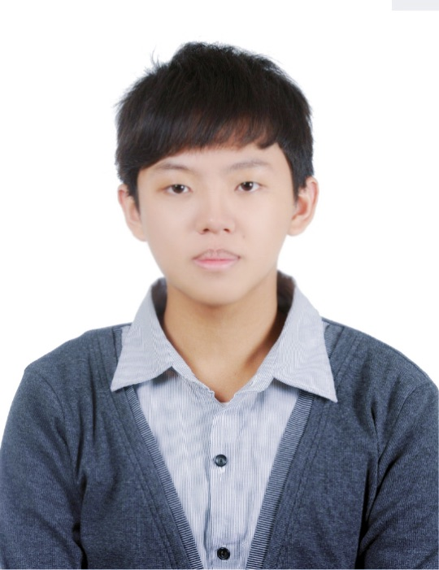
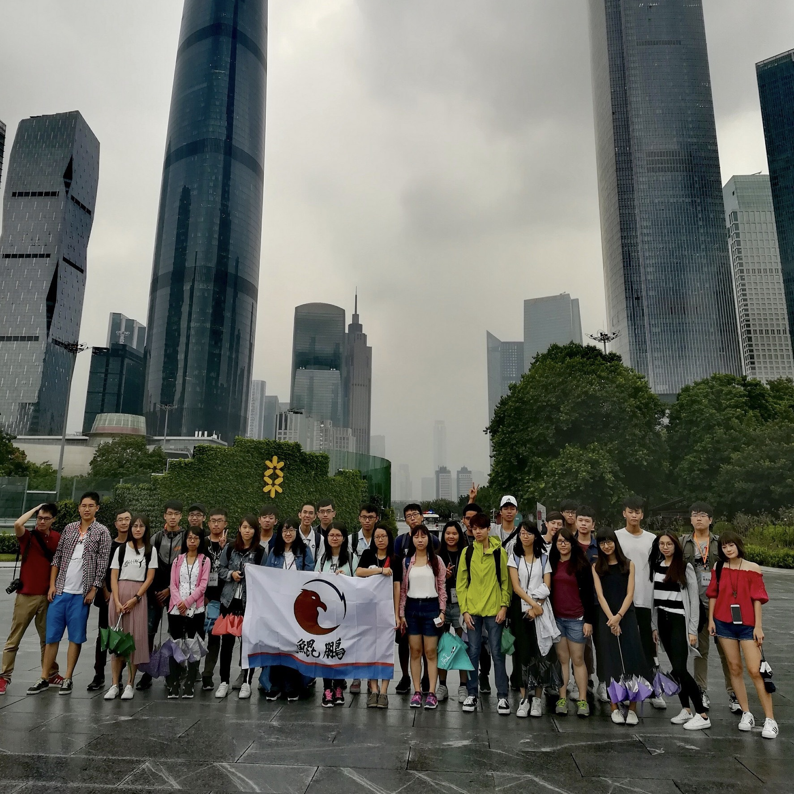
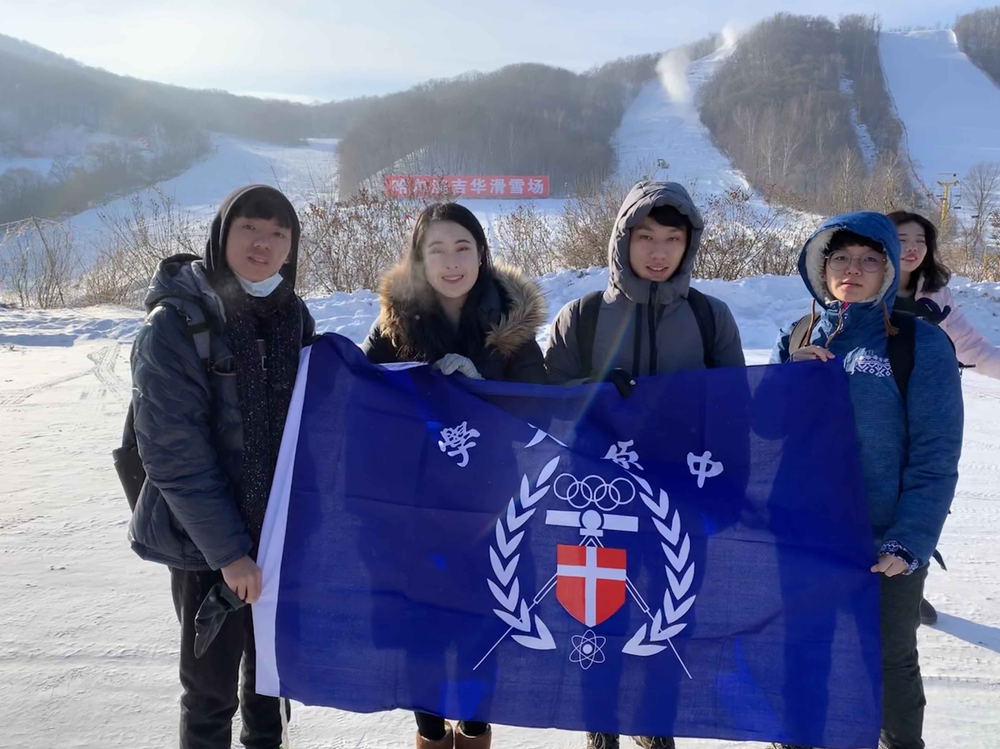

大同國小服務學習營

在大一時的寒假參加了系上舉辦的小學營活動，能參與這個活動並且帶給小朋友歡樂我感到很容榮幸，這也是我第一次在小朋友的面前帶活動，籌辦的過程中我學到要如何跟組員溝通、協調，還有如何才能呈現最好的一面給大家。
尖端科技研習營
在大二的暑假我去參加了尖端科技研習營地點是在廣州及深圳。在整個行程中我印象最深刻的就是在富士康的講座，我覺得很有內容而且還有跟我們分享一些大陸企業成功的秘訣，像是從抄襲到創新的過程、創業的最根本就是以客戶為導向、還要關注地方政府的政策法規等等，在這個營隊中我最大的收穫就是認識了許多優秀又有主見的大學生，這些同學當中不管大學是甚麼領域，我都可以從他們身上吸取到許多不同領域的知識，跟我相同領域的不僅可以加深還可以加廣電子電機方面的常識，而不同領域的讓我更知道每個科系的專長。平時在學校總覺得自己成績不錯，殊不知人外有人，天外有天，永遠會有更優秀的人，所以我再也不能感到自滿，要多跟優秀的人相處與學習，才能使自己更進步。
自動控制研習社

社團活動的參與在大學生活中是不可或缺的。為了想更精進自己的實作能力，並且應用課堂所學。因此我去參加了自動控制研習社，在這邊我接觸了許多我沒碰過的軟體，像是畫3D物件的SolidWork、3D印表機的操作、畫電路的altium designer、微處理器的設計等等，這些我平時較沒機會接觸到，參加了自控社讓我對於電子系更加認識了。當然我有找幾個社員與我一起設計了一台獨一無二的打地鼠遊戲機。自控社當然不只有學藝性的活動，也常常會有社會服務的活動，像是募集發票、淨灘、小學營等等活動，從這些活動都讓我更深刻的體會台灣的社會需要許多的青年幫助，能參與其中我備感榮幸。
海峽兩岸大學生北國文化之旅冬令營
能來參加這次學校舉辦的冬令營我感到非常榮幸，也體驗到了許多過去沒有的經驗，對我來說最大的收穫不僅是觀賞了許多美景，還有認識了許多的大學生，不管是台灣的或大陸的，大家都非常有想法彼此互相交流，了解各自不同的文化，並且都能給予尊重的態度這一趟收穫非常多，也結交了許多知心的好友。希望未來能有機會再參與類似活動。